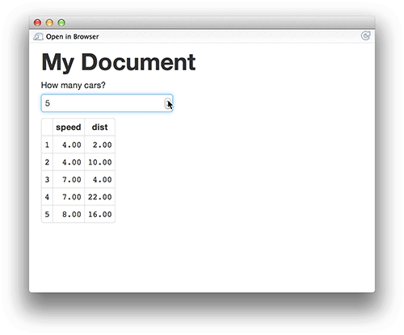

- 建立 R 的使用環境
- 熟悉 R 語言基礎操作
- 敘述句、數列
- 查詢說明檔
- 了解 R 語言的物件的結構
- 變數型態：logical、numeric、character、factor
- 資料存放容器：list、data.frame
複習第一週
複習第二週
- R 語言的流程控制
- if、else
- for loop
- 自訂 function
- R 語言的資料整理
- 讀檔
- dplyr
- R 語言的資料爬析概念
複習第三週
- 資料視覺化（ggplot2）
- 基本語法
- 各式圖形畫法
- 參數調整
資料分析流程
- 資料採集
- 資料清洗處理
- 統計及分析
- 視覺呈現
報告產出
資料分析 in R
https://www.coursera.org/course/repdata
What is Markdown？
- 啟發自2004年純文字電子郵件
- 好寫、好讀
- 可以純文字發布
- Markdown
- Light weight markup language
- Remove HTML tag for higher readibility.
- Inline HTML is avaliable.
- HTML5 Introduction (w3schools.com)
What is RMarkdown？
- 可以在 Markdown 內嵌 R code
- 一次呈現執行程式碼後的結果及文字說明
- 不用再把圖、表複製到其他文件編輯器中
- Rmd -> md -> html (docx, pdf)
Why we need R Markdown？
- 時間久了會忘記code的意思
- 要寫說明文件給同學、同事、教授、主管
- 教授很有想法，想嘗試新方法
(FK！又要重跑一份) - 老闆說要改流程
(MD!之前貼到簡報上的圖又要重貼一份) - 專案報告要呈現，code改了，但是文件無法同時修改！
Why we need R Markdown？
- 製作reproducible的報告、投影片
- 想寫數學式子好展現自己的專業 \(e=mc^2\)
- 只有一份source code，不需要額外複製圖片到報告中
- 需求更改時，可以動態改變報告內容
- 增加資料分析演算法的可讀性
- IDE? RStudio提供支援
前置作業 - 安裝
- 最新版的RStudio已經包含R Markdown功能
- 你也可以透過以下指令安裝R Markdown套件：
install.packages("rmarkdown")
R Markdown 快速導覽
打開你第一個RMarkdown
Overview

Markdown

R Code Chunks
Inline R Code and Equations
- 利用 `r` 在markdown中插入R程式
- 插入 LaTeX 公式的方法：
- 行內
$ equation $ - 段落
$$ equation $$
- 行內
- for example :
- 這是DSP推出的第 4 門課程
- 熵指標的公式為\(-\sum{p_i \log{p_i}}\) ，表示系統的亂度
Rendering Output
- RStudio: "Knit" command (Ctrl+Shift+K)
- Command line: rmarkdown::render function
rmarkdown::render("input.Rmd")
Markdown Basics
Markdown Quick Reference

先來簡單的複製貼上！
Headers
- 字體大小：使用井字號
# Header 1## Header 2### Header 3#### Header 4##### Header 5###### Header 6
先來簡單的複製貼上！
- 粗體：使用
**bold**或__bold__ - 斜體：使用
*italics*或_italics_ - 刪除線：使用
~~我是豬~~
結果：
我是正常文字
粗體：bold
斜體：italics
刪除線：我是豬
先來簡單的複製貼上！
- 利用
+、*、-，列點文字 - 嵌入圖片：
image:  - 嵌入連結：
[木下柚香](https://www.youtube.com/watch?v=ArPaid2Iuck&t=49s) 嵌入表格：
標題一 | 標題二 -------------| ------------- 123 | 456 789 | 0.0
Exercise - 1
請大家以下面的文字為樣板，打出一篇簡短的自我介紹：
大家好，我是LIYUN(1.使用粗體)，目前就讀於國立政治大學，家裡共有：
- 我爸
- 我媽
- 我哥
- 我大弟
- 我小弟
(2.請列點)
有六個成員，我是女生，我長這樣：  (3.請放照片)
(3.請放照片)
想要和我做朋有的人可以加我臉書(4.請放你的臉書連結)
Answer - 1
大家好，我是**LIYUN**(1.使用粗體)，目前就讀於國立政治大學，家裡共有： \ + 我爸 \ + 我媽 \ + 我哥 \ + 我大弟 \ + 我小弟 \ 有六個成員，我是女生，我長這樣：  想要和我做朋有的人可以加我[臉書](https://goo.gl/h39Soa)
R Code Chunks
Overview
- 在 R Code Chunk 中，code可以被執行
- code會被
{r}及包圍 - 快捷鍵（for windows、mac）：alt + control + i
- 將下列文字複製貼上並Knit：
```{r} summary(cars$dist) ```
summary(cars$dist)
Min. 1st Qu. Median Mean 3rd Qu. Max. 2.00 26.00 36.00 42.98 56.00 120.00
命名 R code chunks
```{r plot}
summary(cars)
plot(cars)
```

Basic Chunk Options - 1
echo(TRUE): whether to include R source code in the output fileeval(TRUE): whether to evaluate the code chunkmessage(TRUE): whether to preserve messages emitted by message()include(TRUE): if include=FALSE, nothing will be written into the output document, but the code is still evaluated and plot files are generatedwarning(TRUE): whether to preserve warnings in the outputcomment("##"): set to comment notation
Basic Chunk Options - 2

執行部分chunk
在編輯 RMarkdown 的過程中，想要測試 chunk 中的 code 是否成功，但又不想要每次檢查都 knit，不僅花費太多不必要的時間也浪費系統資源
- 將游標點選在想要測試的 chunk 中任何一個位置
- chunks 選單中，點選 Run Current Chunk
- 快捷鍵：Alt + Ctrl + C

Exercise - 2.1
請大家利用 iris 的資料依照不同的品種，畫出 Sepal.Length 及 Petal.Length 的散點圖
Answer - 2.1
iris %>% ggplot(aes(x=Sepal.Length, y=Petal.Length, color=Species)) + geom_point(shape=1, size=2) # shape控制圖示；size控制點的大小
Exercise - 2.2
請大家在 Rmarkdown 中產出將剛剛的散點圖
Answer - 2.2
第一個chunk
```{r, echo=TRUE, message=TRUE, warning=TRUE}
library(dplyr)
library(ggplot2)
```
第二個chunk
```{r}
iris %>%
ggplot(aes(x=Sepal.Length, y=Petal.Length, color=Species)) +
geom_point(shape=1, size=2)
```
Exercise - 3
利用R Markdown 製作《一周天氣預報》書面報告。
原始網頁

Rmarkdown 呈現

Exercise - 3.1
利用R Markdown 製作《一周天氣預報》書面報告。
- 計算05/23日當日的最高溫與最低溫度
# Hint： # 1. 下載weatherbig5.csv到自己的電腦上 # 2. 在R chunk中，利用read.csv()讀取檔案進行分析 # MAC : read.csv(,fileEncoding="big5") # 3. 找出05/23當日最高溫 max() # 4. 找出05/23當日最低溫 min() # 5. use inline R chunk `r max(...)`
Answer - 3.1
利用R Markdown 製作《一周天氣預報》書面報告。
- 計算05/23日當日的最高溫與最低溫度
# Hint for Linu& Mac：
dat <- read.csv("data/weatherbig5.csv", fileEncoding="big5")
max(dat[1:2, 4:5])
min(dat[1:2, 4:5])
# 預測高溫約`r max(dat[1:2,4:5])`度，低溫約`r min(dat[1:2,4:5])`度
# Hint for Windows：
dat <- read.csv("data/weatherbig5.csv")
max(dat[1:2, 4:5])
min(dat[1:2, 4:5])
# 預測高溫約`r max(dat[1:2,4:5])`度，低溫約`r min(dat[1:2,4:5])`度
呈現表格 in Rmarkdown - 1
- Print data directly:
print(head(women))
height weight 1 58 115 2 59 117 3 60 120 4 61 123 5 62 126 6 63 129
呈現表格 in Rmarkdown - 1
- 不用手動 key in 表格
- 在 Chunk 後面的參數多加上
results='asis' - 在 Chunk 裡面打上
knitr::kable，呈現表格在output上```{r, results='asis'} knitr::kable(women) ```
呈現表格 in Rmarkdown - 1
| height | weight |
|---|---|
| 58 | 115 |
| 59 | 117 |
| 60 | 120 |
| 61 | 123 |
| 62 | 126 |
| 63 | 129 |
呈現表格 in Rmarkdown - 2
- 安裝 DT 套件，請執行
install.packages("DT") - 記得
library(DT) - 易於呈現、美化表格
- DT使用手冊
```{r}
datatable(head(iris))
```
呈現表格 in Rmarkdown - 2
- 可以利用 html 語法修改字體
- 標記特殊欄或列
- 調整欄
datatable(iris) %>%
formatStyle('Sepal.Length', color = 'red', backgroundColor = 'orange', fontWeight = 'bold')
呈現表格 in Rmarkdown - 2
- 調整列
datatable(cars) %>% formatStyle( 'dist' ,
target = 'row',
backgroundColor = styleEqual(c(10), c('pink'))
)
呈現表格 in Rmarkdown - 2
- 調整表格呈現的列數
- 使用
options = list(pageLength = 數字)參數調整
# 呈現三列 datatable(iris, options = list(pageLength = 3)) # 呈現五列 datatable(cars, options = list(pageLength = 5))
Exercise - 3.2
利用R Markdown 製作《一周天氣預報》書面報告。
- 製作未來七天天氣預報表
# Hint： # 你可能需要dplyr套件 # 可以先用filter把白天、晚上分開處理 # 利用 paste(低溫,高溫,sep="-") 來製作溫度區間, i.e. 16-17 # 利用colnames, rownames來對整理好的資料表的行與列命名
Answer - 3.2
利用R Markdown 製作《一周天氣預報》書面報告。
- 製作未來七天天氣預報表
day1 <- filter(dat, 早晚=="白天")
day2 <- mutate(day1, 溫度=paste(高溫,低溫,sep="-"))
day3 <- select(day2, 天氣, 溫度)
night1 <- filter(dat, 早晚=="晚上")
night2 <- mutate(night1, 溫度=paste(高溫,低溫,sep="-"))
night3 <- select(night2, 天氣, 溫度)
out <- data.frame(t(bind_cols(day3, night3)))
colnames(out) <- day1$日期
rownames(out) <- c("白天天氣","白天溫度","晚上天氣","晚上溫度")
Answer A2
利用R Markdown 製作《一周天氣預報》書面報告。
- 製作未來七天天氣預報表
```{r results='asis', echo=FALSE}
knitr::kable(out)
```knitr::kable(out)
Exercise A2 (conti.)
| 05/23 | 05/24 | 05/25 | 05/26 | 05/27 | 05/28 | 05/29 | |
|---|---|---|---|---|---|---|---|
| 白天天氣 | 陰短暫雨 | 多雲短暫雨 | 多雲短暫雨 | 陰短暫雨 | 多雲時陰 | 多雲 | 多雲 |
| 白天溫度 | 32-24 | 30-25 | 26-23 | 27-23 | 27-23 | 28-23 | 28-23 |
| 晚上天氣 | 多雲短暫雨 | 多雲短暫雨 | 陰短暫雨 | 多雲短暫雨 | 多雲 | 多雲 | 多雲 |
| 晚上溫度 | 28-23 | 27-23 | 24-23 | 25-23 | 25-23 | 25-23 | 26-23 |
Exercise - 3.3
利用R Markdown 製作《一周天氣預報》書面報告。
- 製作未來七天天氣預報圖
# Hint： # 你可能需要ggplot2套件 # Mac顯示中文需設置字型 # http://equation85.github.io/blog/graph-font-of-r-in-mac-os-x/ # par(family='STHeiti')
Answer 3.3
利用R Markdown 製作《一周天氣預報》書面報告。
- 製作未來七天天氣預報圖
library(ggplot2) library(tidyr) dat1 <- mutate(weather, 時間=paste(日期,早晚,sep="\n")) dat2 <- select(dat1, 時間, 高溫, 低溫) dat3 <- gather(dat2,variable,value,2:3) ggplot(dat3, aes(x=時間, y=value, group=variable, colour=variable)) + geom_line() + labs(x="時間", y="溫度") + theme_gray(base_family="STHeiti") # 顯示中文字 Mac user only
Answer 3.3
利用R Markdown 製作《一周天氣預報》書面報告。
新增目錄
- Rmarkdown 有提供目錄的功能
- 文件長時方便尋找

新增目錄
- 將以下複製貼上到Rmarkdown的開頭
theme: united表示目錄的主題選擇為united，可以變動
---
title: "你Rmarkdown的名稱"
author: "名字"
date: "2017/5/20"
output:
html_document:
theme: united
toc : true
toc_float: true
---
新增目錄
- 目錄的長寬可以變動
- 透過
fig_width以及fig_height: 7.5參數調整 toc_depth表示顯示到多大的標題- ex:
toc_depth: 4會顯示有少於或等於四個井字號####的標題
- ex:
---
title: "你Rmarkdown的名稱"
author: "名字"
date: "2017/5/20"
output:
html_document:
theme: united
fig_width: 10
fig_height: 7.5
toc : true
toc_depth: 4
toc_float: true
---
Rmarkdown 內建主題選擇
- 可以透過點選的方式選則整個 RMD 的主題
- 改變項目包含目錄、顏色、字體
- 設定小圖示 -> Output Options…

Appendiex
About Document Content
---
title: "Introduction to R Markdown"
author: "Lin"
date: "2016-06-30"
output: html_document
---
YAML metadata
Cover by Wush
Generate Markdown and HTML
```{r results='asis', echo=FALSE}
library(whisker)
temp = '<span class="{{color}}{{number}}">{{color}}{{number}}</span>'
numbers = c("", "2", "3")
colors = c("red", "blue", "green", "yellow", "gray")
for (color in colors){
cat("- ")
for (number in numbers){
out = whisker.render(temp)
cat(out)
}
cat("\n")
}
```Some Useful HTML
- 連結網站
iframe: displaying a web page within a web page
<iframe src="https://dsp.im/" height=600 width=800></iframe>
Some Useful HTML
- 貼上照片
img: inserting images into an HTML document.
Much easier for adjusting width and height.
<img src="img/me.png" height="100" width="500">
除了輸出 HTML
- Rmarkdown 除了可以輸出 HTML 文件外，可以生成投影片
Interactive Documents
It’s possible to embed a Shiny application within a document.
- 
Publish to the web
Using R packages::slidify to publish your slides to the web
library(slidify)
publish_github("repo", username="user_name")
publish_rpubs("title","file_name.html")
publish_dropbox(dir_name)
publish_gist("title",file="file_name.html",publish=TRUE)
Publish to the web: Github
- sign up or login in Github.com at browser
- find button: New repository to add new one.
- select a name for repository, then created.
- the link of your new repository would be like:
https://github.com/"your_name"/"repo_name".git - find Settings in your profile at top-right corner
- select SSH Keys and add SSH Key
- upload your SSH key which created by your own PC/notebook.
- at RStudio, using Rcommand:
slidify::publish_github("repo_name", username="your_name") - your new page will be ready in 5~10 min and link:
https://"your_name".github.io/"repo_name"/index.html
Source
Wush 教學影片
Slidify簡介 by Wush Wu
https://www.youtube.com/watch?v=P97udK2ktuY
20121203 MLDM Monday:markdown + knitr (Hangout 轉播) by Wush Wu
https://www.youtube.com/watch?v=OHKZLeKlUsM
繼續學習之路
- 了解自己的需求，詢問關鍵字與函數
- Taiwan R User Group，mailing list: Taiwan-useR-Group-list@meetup.com
- ptt R_Language版
- R軟體使用者論壇
- StackOverflow
- 歡迎來信 ling32342@gmail.com 、 lillian60222@gmail.com 與我們一起交流！